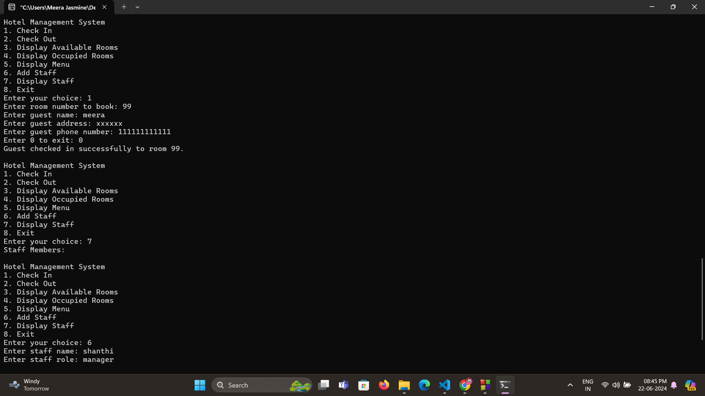
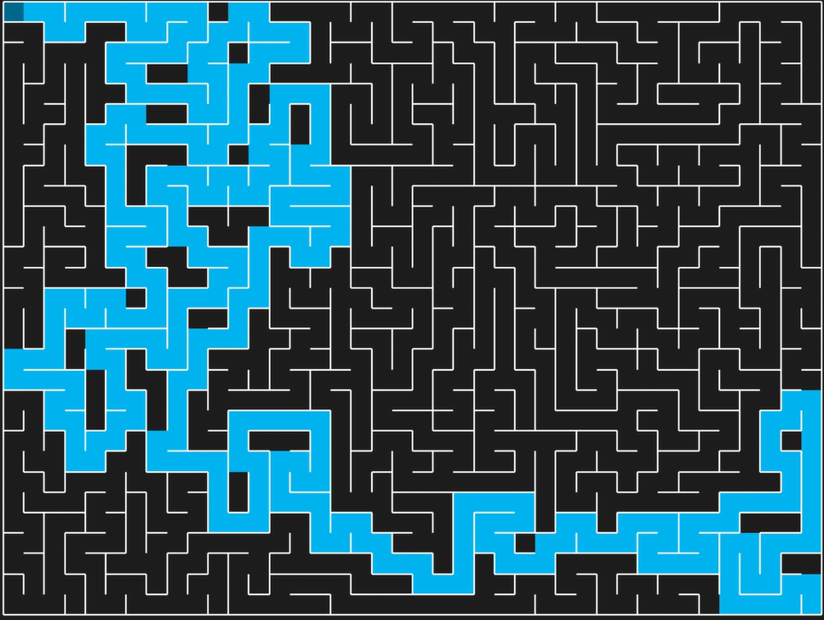

An aspiring web developer with a passion for creating and exploring new ideas in the digital world. Currently, I'm pursuing my B.Tech in Information Technology at Francis Xavier Engineering College, where I'm honing my skills in web development and related technologies.
My journey into web development is driven by a fascination with how innovative web solutions can transform user experiences. I thrive on challenges and am constantly seeking to expand my knowledge and skill set. Whether it's designing intuitive user interfaces, developing robust back-end systems, or experimenting with new technologies, I'm always eager to learn and grow.
I have completed several projects that showcase my diverse skill set. One of my notable projects is a Hotel Management System developed in C, which streamlined various management processes for hotel operations. Additionally, I created a Maze Game in Python, demonstrating my ability to blend logic and creativity in programming.
Through my academic projects and personal endeavors, I aim to build dynamic and impactful websites that blend creativity with functionality. I believe that the web is a powerful platform for communication and interaction, and I am excited to contribute to this ever-evolving field.
Bachelor of Science and Technology
Francis Xavier Engineering College (Expected Graduation:2026)
Currently, I am in my third year of studying Information Technology, focusing on software development, database management, and web technologies. Throughout my coursework, I have gained practical experience in programming languages such as Python, C, Javascript, and HTML/CSS.
Higher Secondary Certificate (HSC) in Computer Science Group
Andrews Matric Hr.Sec School (Graduated: 2022)
Score: 88%
During my higher secondary education, I specialized in the Computer Science group, achieving a score of 90%. This period laid a solid foundation in programming, mathematics, and logical reasoning, which has been instrumental in my further studies.
Secondary School Leaving Certificate (SSLC)
Andrews Matric Hr.Sec School (Graduated: 2020)
Score: 84%
I completed my SSLC with a score of 95%, excelling in subjects such as mathematics, science, and computer science. This strong academic performance set the stage for my future endeavors in the field of technology.
Programming Languages
Intermediate level, proficient in developing algorithms and understanding low-level programming concepts.
Intermediate level, experienced in data analysis.
Intermediate level, knowledgeable in front-end development and interactive web applications.
Advanced level, skilled in creating responsive and accessible web pages.
Beginner level, basic understanding of database queries, data manipulation, and management using MySQL.
Hotel Management System
Language Used: C
For my project in C programming, I developed a comprehensive Hotel Management System that facilitates efficient management of hotel operations, including room bookings, guest management, billing, and staff scheduling. Key features of this project include: User-friendly Interface, Database Integration, Functionality Expansion.
Maze Game
Language Used: Python
Developed a dynamic maze game in Python featuring random maze generation, an intuitive Pygame-based GUI, and efficient pathfinding algorithms. This project showcases my skills in game development, algorithm implementation, and creating engaging user experiences.
Email: meerajasmines.ug22.it@francisxavier.ac.in
LinkedIn: My Profile
Alternatively, you can fill out the contact form below, and I will get back to you as soon as possible.
Copyright © 2024 meerajasmine. All Rights Reserved.